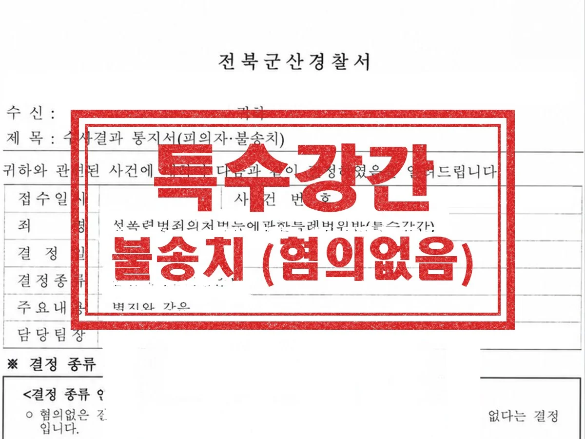

형사 · 군형사
특수강간
평소 알고 지내던 상대방, 지인과 함께 숙박업소에 머무르게 되었는데, 그 과정에서 있었던 성관계를 두고 상대방이 의뢰인을 특수강간으로 고소한 사안입니다. 성관계가 동의하에 이루어진 점, 폭행이나 협박이 전혀 없었던 점, 상대방 주장에 신빙성이 없는 점을 적극 입증하여 변소했습니다.
결과 경찰 불송치
Guide
군산 성범죄 무혐의 변호사 상담 안내
| 관할 | 군산경찰서 → 전주지방공소청 군산지청 → 전주지방법원 군산지원 |
|---|---|
| 관련 법조 | 성폭력처벌법 제26조의2(성폭력범죄의 송치), 공소청 검사의 불기소처분(혐의없음) |
| 담당 변호사 | 이민규 대표변호사 (경찰대학 졸업, 前 군산경찰서 수사과, 전주지방공소청 피해자국선변호사) |
| 관련 분야 | 성범죄 분야 안내 → |
성범죄 사건에서 무혐의는 공소청 검사가 증거가 부족하거나 범죄가 성립하지 않는다고 보아 기소하지 않는 혐의없음 처분을 말합니다. 2026. 10. 2.부터 성폭력범죄는 경찰 단계의 불송치로 끝나지 않고 모두 송치되므로, 경찰 조사에서 다진 진술과 자료가 공소청 검사의 판단까지 그대로 이어집니다.
일단 기소되면 무죄를 받기는 쉽지 않아 수사 단계에서 다툴 사건인지를 냉정하게 판단해야 합니다. 처음에 부인하다가 나중에 인정하거나 그 반대가 되면 어느 쪽 전략도 제대로 작동하기 어렵기 때문에, 방향은 첫 조사 전에 정하는 것이 좋습니다.
Issues
CCTV, 결제·위치·교통카드 기록, 메시지가 피의자의 설명과 맞아떨어지는지가 핵심입니다.
조사 때마다 핵심 내용이 바뀌는지, 구체성이 부족한지, 객관 자료와 어긋나는지를 봅니다.
세부 기억의 차이만으로 진술 전체가 배척되지는 않으므로, 핵심 사실이 어긋나는 지점을 정확히 짚어야 합니다.
직접 증거는 아니지만 신빙성 판단의 참고자료로 쓰이며, 불리하게 나오면 부담이 되므로 응할지 신중히 정합니다.
현장에 있던 사람들의 진술은 중요하지만, 확보 과정에서 회유로 오해받지 않게 조심해야 합니다.
증거가 명백한데 부인하면 양형에서 불리할 수 있어, 인정과 피해 회복으로 방향을 정하는 것이 현실적일 수 있습니다.
Process
01
고소 내용과 확보 가능한 자료를 대조해 다툴 사건인지 판단합니다.
02
사건 전후 동선, 메시지, 영상, 참고인 진술을 시간순으로 정리합니다.
03
정한 방향을 첫 조사부터 일관되게 유지하고, 거짓말탐지기 검사에 응할지 검토합니다.
04
공소청 검사에게 고소인 진술의 모순과 객관 자료를 정리한 의견서를 제출합니다.
Results

평소 알고 지내던 상대방, 지인과 함께 숙박업소에 머무르게 되었는데, 그 과정에서 있었던 성관계를 두고 상대방이 의뢰인을 특수강간으로 고소한 사안입니다. 성관계가 동의하에 이루어진 점, 폭행이나 협박이 전혀 없었던 점, 상대방 주장에 신빙성이 없는 점을 적극 입증하여 변소했습니다.
결과 경찰 불송치
실제 수행한 사건의 결과를 의뢰인이 특정되지 않도록 정리한 것입니다. 사건의 결과는 개별 사실관계와 증거에 따라 달라지며, 과거의 결과가 다른 사건에서도 같은 결과로 이어지는 것은 아닙니다. 성공사례 전체 보기 →
Columns
신고를 알게 된 직후의 행동이 사건 전체를 좌우할 수 있습니다. 상대방 연락과 자료 삭제부터 멈추세요.
거짓말탐지기 결과, 객관적 증거, 진술의 신빙성 등 다퉈 볼 수 있는 유형과 판단 기준까지.
검사가 실시되는 사건, 결과의 한계, 먼저 요청해도 되는 경우와 아닌 경우까지.
넓게 인정되는 추행의 범위, CCTV의 한계, 합의와 무혐의 주장의 갈림길, 유죄 시 처벌 수위까지.
뒤늦은 고소가 방어하기 어려운 이유, 기억 복원에 쓸 자료, 진술을 준비하는 원칙까지.
FAQ
분야를 정해서 연락 주실 필요 없습니다. 무슨 일이 있었는지만 말씀해 주시면 어떤 절차로 가는 사건인지 정리해 드립니다.